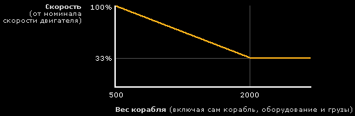

Справочник >
Стандартное оборудование
|
Справочник >
Стандартное оборудование
|
| Стандартное оборудование К стандартным видам оборудования относятся двигатель, топливные баки, радар, сканер, дроид, захват, генератор защитного поля. Все это можно купить в любом магазине оборудования и установить на свой корабль. Кроме того, в магазине можно приобрести корпус корабля, который фактически представляет собой контейнер, внутри которого и размещается прочее оборудование. Каждый вид оборудования имеет следующие характеристики: тип, размер, раса-изготовитель и стоимость. Чем более развитая раса изготовила ту или иную вещь, тем дороже она стоит и тем дольше будет служить, не требуя ремонта.  Корпус КорпусКорпус представляет собой собственно корабль рейнджера. Важными характеристиками корпуса является его объем и количество слотов под оборудование. Из-за различий в объеме и количествах открытых и закрытых слотов корпусы подразделяются на серии. Численно жизнестойкость корабля (Hit Points) равна его объему. Если корпус поврежден, то он может быть починен роботом-дроидом во время полета или в ангаре на любой космической станции. |
|
Типы корпус:
Размер корпуса и количество активных слотов зависит от типа корабля. Например, у военного судна больше слотов под оружие, чем у торгового судна, зато у последнего гораздо более вместительный трюм. Примечание. От типа корпуса зависит, сколько единиц повреждения от каждого полученного выстрела будет нейтрализовано его броней. Но сначала полученный урон ослабляется защитным полем, при наличии генератора защитного поля. Количество повреждений вычисляется по формуле: Повреждения = сила полученного выстрела * (100% - мощность защитного поля) - броня корпуса |
|
При покупке корпуса обращайте внимание на всплывающую подсказку.
Там отображены характеристики корпуса. Схематичное изображение корпуса в левой
части всплывающего окна полностью повторяет количество слотов и наличие форсажа
в окне "Корабль"(S).
|
|
Примеры различных вариантов оснащения корпусов:
Корпусы разделяются на серии. Каждая серия - это измененный стандартный вид корпуса в зависимости от качества и дороговизны серии: добавляются или убираются слоты, увеличивается или уменьшается размер. Таким образом, вариантов наличия слотов у разных корпусов в игре очень большое количество. Примечание. В отличие от других видов оборудования игрок не может продать существующий корпус, а может только купить новый. Корпус из магазина будет доставлен на склад, где можно самостоятельно произвести замену. |
| Двигатель Двигатель служит для перемещения в обычном пространстве и для совершения гиперпрыжков. Потребление топлива в обычном пространстве ничтожно мало. Потребление топлива в гиперпрыжке составляет 1 единицу топлива на парсек. Тип и мощность двигателя влияют на развиваемую скорость / дальность гиперпрыжка. Типы двигателей:
Минимальный размер: 20 Если двигатель сломан, то скорость корабля становится ничтожно малой. В этом случае следует дотянуть до ближайшей планеты и сделать ремонт. Для тех, кто хочет разобраться в механике игры и вычислить реальную скорость корабля: Базовая скорость двигателя не является его реальной скоростью, она зависит от нагруженности корабля, исходя из следующей формулы: Скорость в % от номинала = 122,333 - 0,045 * Вес Примечание: если вес корабля больше 2000, то коэффициент всегда равен 33%. Графическое отображение формулы:  Примеры: 1) У нас есть корабль весом 380 единиц и двигатель с максимальной скоростью 400 единиц - это значит, что он будет летать с максимальной скоростью 400. 2) У нас корабль весом в 1000 единиц и двигатель с максимальной скоростью 800, исходя из формулы, его скорость будет 77% от номинала и получается, что реальная скорость равна 800*0.77=616 единиц. Еще одним фактором снижения скорости является перегрев двигателя во время боя. Из-за попаданий и частых маневров, он может снизить скорость до двух раз. |
| Топливный бак Для чего служит топливный бак, ясно из названия. Чем больше топлива содержится в баке, тем более дальний гиперпрыжок может совершить корабль без дозаправки. Если топливо закончилось, то корабль может перемещаться лишь в пределах текущей звездной системы. Количество топлива в баках зависит от их объема и типа. Типы топливных баков:
Минимальный размер: 20 Итоговая вместимость бака вычисляется по формуле:Итоговая вместимость = размер / 2 + базовая вместимость Пять десятых округляются в меньшую сторону. Гипержидкостный - 10 Конденсатный - 15.5 Редукционный - 20 Протопузырчатый - 25.5 Позиционный - 30 Эндокластерный - 35.5 Гироскопический - 40 Текриновый - 45.5 Примечание. Если топливный бак поврежден, то он начинает протекать, хотя и функционирует. |
| Радар Радар позволяет видеть в космосе различные объекты (планеты, станции, корабли) и определять их важнейшие характеристики - размер, скорость, наименование и т.д. Информация, получаемая с радара, отображается на панели радара. Радиус действия радара зависит от его типа. Типы радаров:
Минимальный размер: 15 Если радар не установлен или сломан, то навигация существенно затрудняется. Кроме того, становятся невозможными переговоры с другими кораблями, а также их сканирование. |
| Сканер Сканер дает возможность исследовать начинку другого корабля, то есть увидеть оборудование и вооружение, установленное внутри него. Данная информация очень полезна в бою, потому как вы точно будете представлять силу противника. Сканирование возможно, если мощность сканера позволяет преодолеть защитное поле сканируемого корабля. Мощность сканера зависит от его типа. Типы сканеров:
Минимальный размер: 15 Сканер функционирует только в зоне действия радара. Если радар не установлен или сломан, то сканер не действует. Сканирование кораблей доминаторов невозможно. |
| Дроид Ремонтный дроид служит для восстановления поврежденной в бою обшивки корабля и может работать прямо во время полета. За один день работы дроид может восстановить N единиц корпуса корабля - в зависимости от типа. Типы дроидов:
Минимальный размер: 20 |
| Захват Захват служит для подъема предметов на борт корабля. Предметы могут появляться в космосе, как естественным путем, так и в результате боевых действий участников игры. При уничтожении корабля часть его груза или оборудования может остаться невредимой и разлететься в космосе. Грузоподъемность захвата и его радиус действия зависят от типа захвата. Типы захватов:
Минимальный размер: 20 |
| Генератор защитного поля Генератор создает вокруг корабля защитное поле, которое ослабляет наносимые противником повреждения на определенный процент, в зависимости от мощности генератора. Кроме того, если мощность защитного поля больше мощности сканера другого корабля, то ваш корабль будет защищен от нежелательного сканирования. Мощность защитного поля зависит от типа генератора. Типы генераторов защитных полей:
Минимальный размер: 20 |
| |